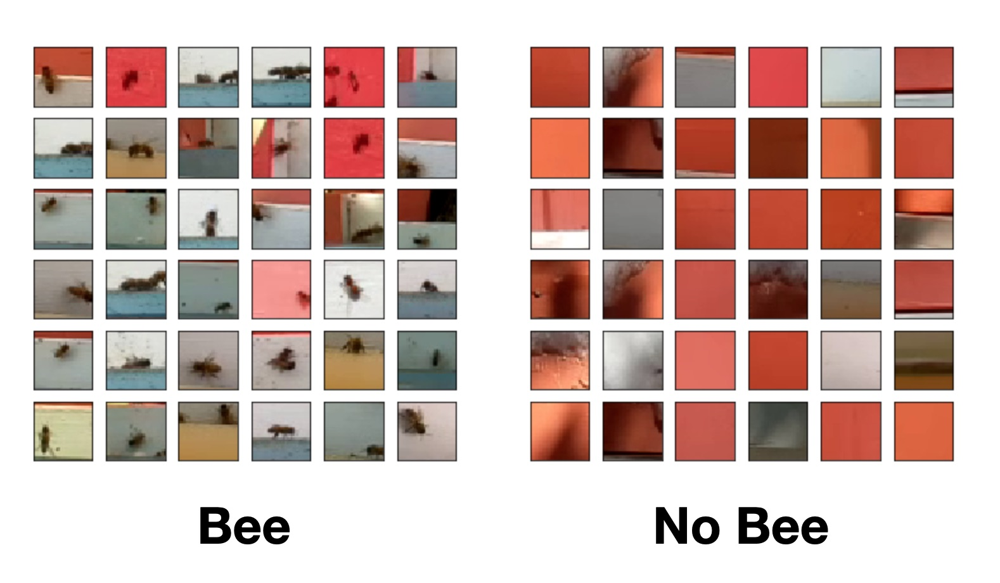
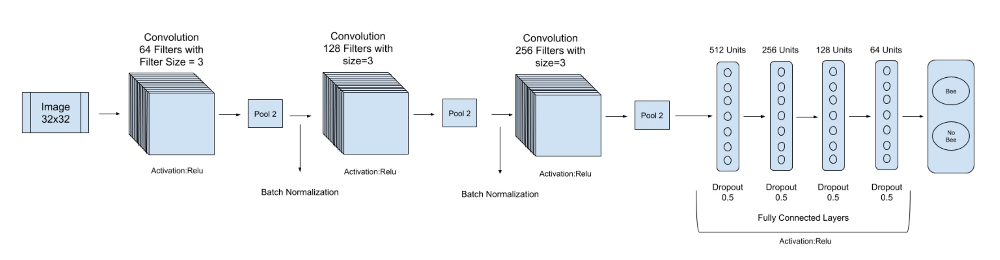
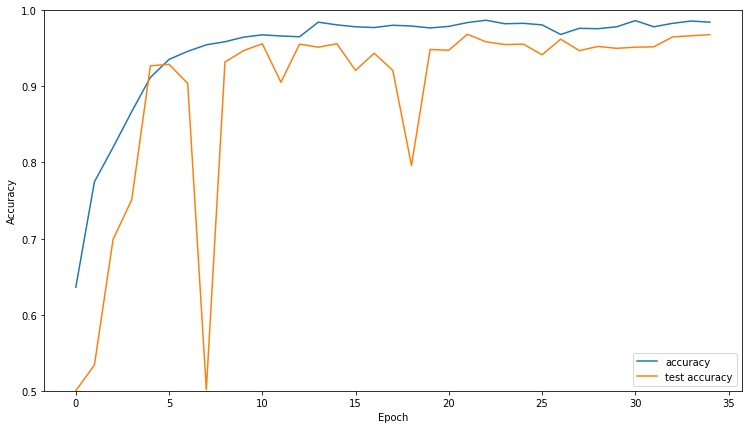

Counting Bee Movements Using a Convolutional Neural Network
Luckily, we can stand on the shoulders of giants. In this great paper by Vladimir Kulyukin and Sarbajit Mukherjee, the authors trained a CNN classifier for this very purpose. More importantly, they released their labeled datasets!
Let’s take a look at some of their data (from dataset BEE1, 32x32 images):

The “no bee” class seems to have a red bias, but we’ll address that later.
Here’s the architecture that they say worked best for a 32x32 input image: 
With that image, I was able to implement the network in a few minutes using Keras:
model = models.Sequential()
model.add(layers.Conv2D(64, (3, 3), activation='relu', input_shape=(32, 32, 3)))
model.add(layers.MaxPooling2D((2, 2)))
model.add(layers.BatchNormalization())
model.add(layers.Conv2D(128, (3, 3), activation='relu'))
model.add(layers.MaxPooling2D((2, 2)))
model.add(layers.BatchNormalization())
model.add(layers.Conv2D(256, (3, 3), activation='relu'))
model.add(layers.MaxPooling2D((2, 2)))
model.add(layers.Flatten())
model.add(layers.Dense(512))
model.add(layers.Dropout(0.5))
model.add(layers.Activation("relu"))
model.add(layers.Dense(256))
model.add(layers.Dropout(0.5))
model.add(layers.Activation("relu"))
model.add(layers.Dense(128))
model.add(layers.Dropout(0.5))
model.add(layers.Activation("relu"))
model.add(layers.Dense(64))
model.add(layers.Dropout(0.5))
model.add(layers.Activation("relu"))
model.add(layers.Dense(1))
model.add(layers.Activation("sigmoid"))
Here’s what the accuracy looks like during training:

Applying It To Our Data
Note that this is an image classifier, not a detector. To apply this classifier to video, the authors used a scheme like this:
- apply some background subtraction/motion detection algorithm like MOG, MOG2, or GMG to determine regions of interest, then
- generate some 32x32 image tile containing the region of interest, then
- run the CNN on the tile to determine whether the motion was “bee related” or not
In other words, rather than counting the number of bees, they are counting the number of movements that are bee-related. This is a useful metric to determine relative changes in foraging behavior. That said, a bee detection or pose estimation NN may provide even more insight.
Regardless, this should be pretty easy to implement. Let’s revisit the video of a hive entrance I analyzed in an earlier post:
Here’s the video with the MOG2 background subtraction algorithm applied:
We can then threshold the background subtraction output to get regions with substantial movement only: